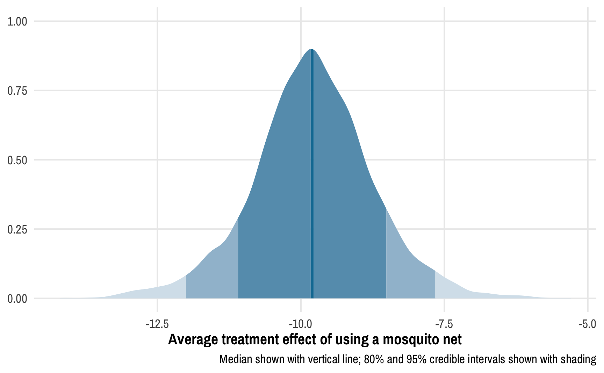

![]()
This post is a sequel to the previous one on Bayesian propensity scores and won’t make a lot of sense without reading that one first. Read that one first!
In my previous post about how to create Bayesian propensity scores and how to legally use them in a second stage outcome model, I ended up using frequentist models for the outcome stage. I did this for the sake of computational efficiency—running 2,000 models with lm() is way faster than running 2,000 individual Bayesian models with brm() from brms (like, creating 2,000 Bayesian models could take hours or days or weeks!)
I concluded with this paragraph:
We could technically run a Bayesian outcome model with
brm(), but we’d have to run it 2,000 times—one model per set of weights—and that would take literally forever and might melt my computer. There could be a way to only run a single outcome model once and use one set of weights for each of the iterations (i.e. use the first column of propensity scores for the first iteration of the outcome model, the second for the second, and so on), but that goes beyond my skills with brms.
Jordan Nafa took on this challenge, though, and figured out a way to do exactly this with Stan!! He has a super well-documented example at GitHub, and I’ve adapted and borrowed liberally from his code for this post. Check out his example for additional updates and even more fantastic explanation!
The intuition
After creating a treatment model in the design stage (i.e. predicting net usage based on the confounders), we generate a matrix of propensity scores or inverse probability weights (\(\nu\) in Liao and Zigler (2020)’s approach). Each column of this matrix contains one posterior draw of propensity scores or weights.
In my original post, we generated 2,000 sets of propensity scores and then ran 2,000 outcome models with lm() to calculate the average treatment effect (ATE).
brms allows you to use weights with a slightly different syntax from lm():
brm(bf(outcome | weights(iptw) ~ treatment), data = whatever)The argument we feed to weights() needs to be a column in the data that we’re working with (like iptw here for the inverse probability weights).
Since it’s not really feasible to run thousands of separate Bayesian models, we can instead run the outcome model once and feed one set of weights for each MCMC iteration. Conceptually, we want to do something like this:
- Outcome model posterior draw 1:
bf(outcome | weights(iptw[,1]) ~ treatment) - Outcome model posterior draw 2:
bf(outcome | weights(iptw[,2]) ~ treatment) - Outcome model posterior draw 3:
bf(outcome | weights(iptw[,3]) ~ treatment) - (and so on)
Each posterior draw thus gets its own set of weights, and all the draws are combined in the end as a single posterior distribution of the average treatment effect.
Using a matrix of weights with raw Stan code
Unfortunately brms can’t handle a matrix of weights. The weights() term in the model formula can only take a single column—it can’t iterate through a bunch of columns in a matrix. This is sad because it means we have to leave the comfort and convenience of brms and work with Stan code directly.
Fortunately, brms makes it easy to work with raw Stan and does most of the hard work for us. The make_stancode() function will convert a brms-based model into Stan code that we can then edit and tinker with.
Here’s how we can do it (again with heavily annotated code from Jordan Nafa’s phenomenal example of how this all works):
library(tidyverse) # ggplot2, dplyr, %>%, and friends
library(brms) # Nice interface for Bayesian models through Stan
library(rstan) # For running Stan through R
library(tidybayes) # For dealing with MCMC draws in a tidy way
library(ggdist) # For distribution-related geoms
library(broom.mixed) # For converting Stan-based model results to data frames
library(here) # Convenient way for locating files
set.seed(6348) # From random.org
# Use the Egypt palette from the MetBrewer package
egypt <- MetBrewer::met.brewer("Egypt")
# Custom ggplot theme to make pretty plots
# Get Archivo Narrow at https://fonts.google.com/specimen/Archivo+Narrow
theme_nice <- function() {
theme_minimal(base_family = "Archivo Narrow") +
theme(panel.grid.minor = element_blank(),
plot.background = element_rect(fill = "white", color = NA),
plot.title = element_text(face = "bold"),
axis.title = element_text(face = "bold"),
strip.text = element_text(face = "bold", size = rel(0.8), hjust = 0),
strip.background = element_rect(fill = "grey80", color = NA),
legend.title = element_text(face = "bold"))
}
# Use this theme on all plots
theme_set(
theme_nice()
)
# Make all labels use Archivo by default
update_geom_defaults("label",
list(family = "Archivo Narrow",
fontface = "bold"))First we’ll load the data (see the previous post or my class example on inverse probability weighting for more details about what these columns are). Our main question here is the effect of mosquito net usage on malaria risk.
nets <- read_csv("https://evalf21.classes.andrewheiss.com/data/mosquito_nets.csv")We’ll then create a model that predicts whether people self-select into using a mosquito net, based on our confounders of income, health status, and nighttime temperatures.
# First stage model predicting net usage with the confounders
model_treatment <- brm(
bf(net ~ income + temperature + health,
decomp = "QR"), # QR decomposition handles scaling and unscaling for us
family = bernoulli(), # Logistic regression
data = nets,
chains = 8, cores = 8, iter = 2000,
seed = 1234, backend = "cmdstanr"
)
## Start samplingWe’ll the extract the predicted probabilities / propensity scores from the model and calculate inverse probability weights in each posterior draw for each person in the dataset:
# Extract posterior predicted propensity scores
pred_probs_chains <- posterior_epred(model_treatment)
# Rows are posterior draws, columns are original rows in dataset
dim(pred_probs_chains)
## [1] 8000 1752
# Create a matrix of weights where each column is a posterior draw
# Transpose the matrix so that columns are posterior draws
ipw_matrix <- t(pred_probs_chains) %>%
as_tibble(.name_repair = "universal") %>%
# Add treatment column so we can calculate weights
mutate(net_num = nets$net_num) %>%
# Calculate weights
mutate(across(starts_with("..."),
~ (net_num / .x) + ((1 - net_num) / (1 - .x))
)) %>%
# Get rid of treatment column
select(-net_num)
# Rows are original rows in data and columns are posterior draws
dim(ipw_matrix)
## [1] 1752 8000
head(ipw_matrix, c(5, 10))
## # A tibble: 5 × 10
## ...1 ...2 ...3 ...4 ...5 ...6 ...7 ...8 ...9 ...10
## <dbl> <dbl> <dbl> <dbl> <dbl> <dbl> <dbl> <dbl> <dbl> <dbl>
## 1 2.49 3.01 2.50 2.62 2.66 2.78 2.73 2.74 2.60 2.70
## 2 1.70 1.57 1.70 1.61 1.62 1.65 1.64 1.63 1.69 1.63
## 3 1.22 1.16 1.22 1.17 1.21 1.17 1.14 1.14 1.22 1.20
## 4 3.64 4.02 3.63 4.03 3.68 3.92 4.16 4.17 3.26 3.64
## 5 1.44 1.44 1.45 1.41 1.45 1.44 1.43 1.43 1.58 1.47Export starter Stan code
Next we need to use these weights in an outcome model using the neat trick of using one column of weights for each iteration of the outcome model, which requires actual Stan code (which I haven’t really written since this blog post or this research project (see here)).
To simplify life and make it so we don’t have to really write any raw Stan code, we’ll create the skeleton of our Bayesian outcome model with brms, but we don’t actually run it—instead we’ll pass the formula and priors to make_stancode() and save the underlying Stan code as a new file.
# Outcome model
# We can just use a placeholder weights(1) since the nets data doesn't have any
# actual weights in it. It's okay bc we'll never actually run this model.
outcome_formula <- bf(malaria_risk | weights(1) ~ net,
family = gaussian)
outcome_priors <- c(prior("student_t(3, 0, 2.5)", class = "Intercept"),
prior("normal(0, 2.5)", class = "b"))
# Generate Stan code for the outcome model
make_stancode(
formula = outcome_formula,
data = nets,
prior = outcome_priors,
save_model = "original_stan_code.stan"
)Adjust the Stan code slightly
Next we need to make some minor adjustments to the Stan code. You can also download a complete version of all these changes in this .zip file:
Here’s what needs to change:
Change 1: Declare two functions in the functions block. The actual code for these two functions will live in a separate C++ file that we’ll look at and make in just a minute. These will let us keep track of the current iteration number of the MCMC chains. By design, Stan doesn’t let you see the current iteration number (Stan code is designed to be stateless and not dependent on specific iteration numbers) but these two functions allow us to keep track of this ourselves. (These functions were originally written by Louis at the Stan forum; this StackOverflow answer shows another example of them working in the wild)
If you’re editing this file in RStudio, you’ll likely see a syntax error after this block, with the complaint “Function declared, but not defined.” That’s okay. We’ll officially define these functions in an external file and inject it into this Stan code when compiling. You can ignore the error.
// Original block
functions {
}// Modified block
// ADD 2 NEW LINES
functions {
void add_iter(); // ~*~THIS IS NEW~*~
int get_iter(); // ~*~THIS IS NEW~*~
}Change 2: Remove the declaration for the weights variable from the data block and add new declarations for two new variables: L for keeping track of the number of columns in the weights matrix, and IPW for the weights matrix:
// Original block
data {
int<lower=1> N; // total number of observations
vector[N] Y; // response variable
vector<lower=0>[N] weights; // model weights
int<lower=1> K; // number of population-level effects
matrix[N, K] X; // population-level design matrix
int prior_only; // should the likelihood be ignored?
}// Modified block
// REMOVE 1 LINE; ADD 2 NEW LINES
data {
int<lower=1> N; // total number of observations
vector[N] Y; // response variable
//vector<lower=0>[N] weights; // model weights -- ~*~REMOVE THIS~*~
int<lower=1> K; // number of population-level effects
matrix[N, K] X; // population-level design matrix
int prior_only; // should the likelihood be ignored?
int L; // number of columns in the weights matrix -- ~*~THIS IS NEW~*~
matrix[N, L] IPW; // weights matrix -- ~*~THIS IS NEW~*~
}Change 3: In the model block, add the ability to keep track of the current iteration with get_iter(). And—most importantly—modify the actual model so that it uses a column from the weights matrix IPW[n, M] rather than the single weights[n] vector.
// Original block
model {
// likelihood including constants
if (!prior_only) {
// initialize linear predictor term
vector[N] mu = Intercept + Xc * b;
for (n in 1:N) {
target += weights[n] * (normal_lpdf(Y[n] | mu[n], sigma));
}
}
// priors including constants
target += normal_lpdf(b | 0, 2.5);
target += student_t_lpdf(Intercept | 3, 0, 2.5);
target += student_t_lpdf(sigma | 3, 0, 14.8)
- 1 * student_t_lccdf(0 | 3, 0, 14.8);
}// Modified block
// ADD 2 LINES
model {
// likelihood including constants
if (!prior_only) {
// initialize linear predictor term
vector[N] mu = Intercept + Xc * b;
int M = get_iter(); // get the current iteration -- ~*~THIS IS NEW~*~
vector[N] weights = IPW[, M]; // get the weights for this iteration -- ~*~THIS IS NEW~*~
for (n in 1:N) {
target += weights[n] * (normal_lpdf(Y[n] | mu[n], sigma));
}
}
// priors including constants
target += normal_lpdf(b | 0, 2.5);
target += student_t_lpdf(Intercept | 3, 0, 2.5);
target += student_t_lpdf(sigma | 3, 0, 14.8)
- 1 * student_t_lccdf(0 | 3, 0, 14.8);
}Change 4: And finally in the generated quantities block, add the add_iter() function so that the iteration counter increases by one at the end of the draw.
// Original block
generated quantities {
// actual population-level intercept
real b_Intercept = Intercept - dot_product(means_X, b);
}// Modified block
// ADD 1 LINE
generated quantities {
// actual population-level intercept
real b_Intercept = Intercept - dot_product(means_X, b);
add_iter(); // update the counter each iteration -- ~*~THIS IS NEW~*~
}Define C++ functions for the counter
Before compiling this and running our shiny new model, we need to officially define our two new functions for keeping track of the MCMC iteration: add_iter() and get_iter(). We need to do this with C++ (But don’t worry if you’ve never touched C++ before! This is my first time using it too!). Create a file named iterfuns.hpp (or whatever you want to call it) with this in it:
iterfuns.hpp
// Declare an integer to keep track of the iteration count
static int itct = 1;
// Increment the counter
inline void add_iter(std::ostream* pstream__) {
itct += 1;
}
// Retrieve the current count
inline int get_iter(std::ostream* pstream__) {
return itct;
}When we compile the Stan code, we’ll inject this C++ code into it and our add_iter() and get_iter() functions will work.
Compile the Stan code
Before running the model and creating a bunch of MCMC chains, we need to compile this Stan code into a binary program that we can then use for MCMC. This is the same thing that happens when you use brms() and wait for a few seconds while it says Compiling Stan program....
Technically we can do this by passing the file name of our modified Stan code to stan_model(), but rstan and/or Stan does stuff behind the scenes (storing compiled programs in /tmp or as hidden files somewhere on the computer) for caching purposes, and it can store older (and incorrect) versions of compiled models that can be hard to track down and get rid of. According to the documentation of stan_model(), we can force Stan to recompile the model every time and avoid this caching headache (it’s seriously a headache!) by first explicitly converting the Stan code to C++ with stanc(), and then passing that code to stan_model().
So to avoid caching issues, we’ll do this in two steps. First we’ll convert our modified Stan code to C++. The allow_undefined = TRUE option here is necessary because add_iter() and get_iter() are defined in an external file and Stan will complain because they’re not formally defined here (similar to why RStudio complains).
Then we’ll feed this converted code to stan_model() and inject the C++ file with the counter functions in it. To reference an external file in C++, we have to include a line that looks like this:
#include "/full/path/to/iterfuns.hpp"Instead of hand-typing that, we’ll use here() from the here package to automatically generate the absolute path, along with some extra newlines (\n).
# Convert the modified Stan code to C++
outcome_c <- stanc("modified_stan_code.stan",
allow_undefined = TRUE)
# Compile C++ified Stan to a binary model object
outcome_model <- stan_model(
stanc_ret = outcome_c,
includes = paste0('\n#include "', here('iterfuns.hpp'), '"\n')
)After a few seconds, we should have a new outcome_model object. This doesn’t contain any results or chains or anything. This is essentially a mini standalone program that’s designed to take our nets data, our weights, and the priors that we specified.
This is essentially the difference between brms and rstanarm. rstanarm comes with a bunch of pre-compiled model programs like stan_glm(), so you don’t have to compile anything yourself ever—you don’t need to wait for the Compiling Stan program... message to finish like you do with brms. But that extra pre-compiled speed comes at the cost of flexibility—you can’t run as many models or do as many neat extra things with rstanarm as you can with brms.
Run the model
Finally, we can feed our data into the outcome_model object and run the MCMC chains. Unlike brms, we can’t just feed it a formula and a data frame. Instead, we need to feed this model a list with each of the variables we declared in the data block of our code. The syntax is a little wonky, and the best way to get a feel for how this list needs to be structured is to use make_standata() and follow the same structure.
Importantly, we need to use at least the same number of posterior chains as we have weights for (i.e. we can’t have 2,000 sets of weights and use 8,000 chains in the outcome model since we’ll run out of weights). Here we’ll use the same amount (2,000 per chain, only 1,000 of which are kept due to the warmup phase).
# Make a dataset of all the covariates and an intercept column
outcome_covariates <- model.matrix(~ net_num, data = nets)
head(outcome_covariates)
## (Intercept) net_num
## 1 1 1
## 2 1 0
## 3 1 0
## 4 1 1
## 5 1 0
## 6 1 0
# Make a list of all the required pieces for the data block in the Stan model
outcome_data <- list(
N = nrow(nets),
Y = nets$malaria_risk,
K = ncol(outcome_covariates),
X = outcome_covariates,
L = ncol(ipw_matrix),
IPW = as.matrix(ipw_matrix),
prior_only = 0
)
str(outcome_data)
## List of 7
## $ N : int 1752
## $ Y : num [1:1752] 33 42 80 34 44 25 19 35 32 40 ...
## $ K : int 2
## $ X : num [1:1752, 1:2] 1 1 1 1 1 1 1 1 1 1 ...
## ..- attr(*, "dimnames")=List of 2
## .. ..$ : chr [1:1752] "1" "2" "3" "4" ...
## .. ..$ : chr [1:2] "(Intercept)" "net_num"
## ..- attr(*, "assign")= int [1:2] 0 1
## $ L : int 8000
## $ IPW : num [1:1752, 1:8000] 2.49 1.7 1.22 3.64 1.44 ...
## ..- attr(*, "dimnames")=List of 2
## .. ..$ : NULL
## .. ..$ : chr [1:8000] "...1" "...2" "...3" "...4" ...
## $ prior_only: num 0# FINALLY run the model!
outcome_samples <- sampling(
outcome_model,
data = outcome_data,
chains = 8,
iter = 2000,
cores = 8,
seed = 1234
)Analyze the results
The results from rstan::sampling() behave pretty similarly to the output from rstanarm or brms (which isn’t surprising, since both of those packages are just fancier frontends for Stan). We can print the results, for instance:
print(outcome_samples)
## Inference for Stan model: modified_stan_code.
## 8 chains, each with iter=2000; warmup=1000; thin=1;
## post-warmup draws per chain=1000, total post-warmup draws=8000.
##
## mean se_mean sd 2.5% 25% 50% 75% 97.5% n_eff Rhat
## b[1] -9.8 0.01 1.06 -12.0 -10.4 -9.8 -9.16 -7.66 8120 1
## Intercept 35.7 0.00 0.25 35.2 35.5 35.7 35.87 36.19 3020 1
## sigma 13.8 0.00 0.22 13.4 13.7 13.8 13.92 14.22 3991 1
## b_Intercept 39.5 0.01 0.47 38.6 39.2 39.5 39.81 40.46 5295 1
## lp__ -14315.3 2.01 183.11 -14727.6 -14418.5 -14298.7 -14185.22 -14009.48 8325 1
##
## Samples were drawn using NUTS(diag_e) at Mon Nov 28 15:17:32 2022.
## For each parameter, n_eff is a crude measure of effective sample size,
## and Rhat is the potential scale reduction factor on split chains (at
## convergence, Rhat=1).Or we can use tidy() from broom.mixed:
tidy(outcome_samples, conf.int = TRUE)
## # A tibble: 4 × 5
## term estimate std.error conf.low conf.high
## <chr> <dbl> <dbl> <dbl> <dbl>
## 1 b[1] -9.80 1.06 -12.0 -7.66
## 2 Intercept 35.7 0.253 35.2 36.2
## 3 sigma 13.8 0.216 13.4 14.2
## 4 b_Intercept 39.5 0.470 38.6 40.5The coefficients aren’t nicely named and separated into fixed and random effects like they are in brms output, but we can still get the results out (and we could rename them in the model if we wanted, or we can do that on our own as we work with the data). The main coefficient we care about here is the one for net, or b[1]. Based on this Bayesian outcome model, after incorporating the uncertainty from the posterior distribution of inverse probability weights, the ATE of using a net is -9.8, with an error of 1.06.
This is so cool! At the end of the previous post, after running 2,000 frequentist models and combining the ATEs and standard errors, we ended up with these results:
# ----------------------------------------------------------------------------------------------
# Excerpt from https://www.andrewheiss.com/blog/2021/12/18/bayesian-propensity-scores-weights/
# ----------------------------------------------------------------------------------------------
# Combined average treatment effect
mean(outcome_models$ate)
## [1] -10.1
# Combined standard errors with Rubin's rules (this is correct)
rubin_se(outcome_models$ate, outcome_models$ate_se)
## [1] 1.01We get comparable results with this Bayesian outcome model, only now we get to do fun Bayesian inference with the results!
Instead of confidence intervals, we have credible intervals: given the data we have, there’s a 95% chance that the ATE is between -12.01 and -7.66. We can see this in the posterior distribution of the ATE:
# Make a long, tidy data frame of the posterior draws
outcome_tidy <- outcome_samples %>%
tidy_draws() %>%
rename(ate = `b[1]`)ggplot(outcome_tidy, aes(x = ate)) +
stat_slab(aes(fill_ramp = after_stat(cut_cdf_qi(cdf, .width = c(0.02, 0.8, 0.95, 1)))),
fill = egypt[2]) +
scale_fill_ramp_discrete(range = c(1, 0.2), guide = "none") +
labs(x = "Average treatment effect of using a mosquito net", y = NULL,
caption = "Median shown with vertical line; 80% and 95% credible intervals shown with shading")
We can calculate the proportion of this posterior distribution that is less than zero to find the probability of direction, or the probability that the ATE is negative:
# Find the proportion of posterior draws that are less than 0
outcome_tidy %>%
summarize(prop_lessthan_0 = sum(ate < 0) / n())
## # A tibble: 1 × 1
## prop_lessthan_0
## <dbl>
## 1 1Not surprisingly, given the distribution we saw above, there’s a 100% chance that the ATE is negative.
We can also calculate the proportion of the posterior distribution that falls within a region of practical equivalence (or ROPE). We can think of this as a “dead zone” of sorts. If the ATE is 0, we know for sure that there’s no effect. If the ATE is something small like -0.51 or 0.73, we probably don’t actually care—that’s not a huge effect and could just be because of measurement error. If the ATE is sizable and far away from this “dead zone” / ROPE, we can be pretty confident of the substantiality of the effect.
There are a lot of ways to determine the size of the ROPE. You can base it on experience with the phenomenon (e.g. you’re an expert in public health and know that a 1-2 point change in malaria risk scores is small, while a 10+ change is big), or you can base it on the data you have (like 0.1 * sd(outcome), which is a common approach).
For this example, we’ll pretend that any effect between −7 and 7 doesn’t matter—for an expert, values like 2.4 or −6 would be negligible. This is a huge ROPE, by the way! If we follow the 0.1 × the standard deviation of the outcome rule, the ROPE should only be ±0.1 * sd(nets$malaria_risk), or ±1.546. I’m using ±7 here just for the sake of illustration—I want to see the ROPE on the plot :)
# Find the proportion of posterior draws that are less than 0
prop_outside <- outcome_tidy %>%
summarize(prop_outside_rope = 1 - sum(ate >= -7 & ate <= 7) / n())
prop_outside
## # A tibble: 1 × 1
## prop_outside_rope
## <dbl>
## 1 0.992ggplot(outcome_tidy, aes(x = ate)) +
stat_halfeye(aes(fill_ramp = after_stat(x >= 7 | x <= -7)),
fill = egypt[2], .width = c(0.95, 0.8)) +
scale_fill_ramp_discrete(from = egypt[1], guide = "none") +
annotate(geom = "rect", xmin = -7, xmax = 0, ymin = -Inf, ymax = Inf,
fill = egypt[1], alpha = 0.3) +
annotate(geom = "label", x = -3.5, y = 0.75, label = "ROPE\n(dead zone)\n0 ± 7") +
labs(x = "Average treatment effect of using a mosquito net", y = NULL,
caption = "Median shown with point; 80% and 95% credible intervals shown with black bars")Using a gigantic ROPE of 0±7 malaria risk points, we can see that 99.2% of the posterior distribution lies outside the region of practical equivalence, which provides pretty strong evidence of a nice big ATE. This program definitely has an effect! (It’s fake data! I made sure it had an effect!)
Using the results with brms
One issue with using rstan::sampling() instead of brms is that we can’t do nice things like automatic extraction of posterior expectations or predictions, since the MCMC samples we have are a stanfit object and not a stanreg object (which is what both rstanarm and brms produce):
posterior_epred(outcome_samples)
## Error in UseMethod("posterior_epred"): no applicable method for 'posterior_epred' applied to an object of class "stanfit"However, it is possible to create an empty brms object and stick the MCMC samples we made with rstan::sampling() into it, which then allows us to do anything a regular brms model can do! This only works when making minimal changes to the Stan code—we can’t modify the likelihood (or the target part of the model block of the Stan code). We didn’t touch this part, though, so we can safely stick these samples into a brms object.
To do this, we first have to create an empty model by using the empty = TRUE argument. We also have to create a placeholder weights column, even though we’re not actually fitting the model—brms will complain otherwise.
We can then assign the outcome_samples object to the $fit slot of the empty model. Finally, we have to change the coefficient names to be nicer and compatible with brms. Note how earlier the coefficient for net_num was named b[1], which was inconvenient. By using brms::rename_pars(), we can change those subscripted/indexed names into nice names again.
# Placeholder outcome model
outcome_brms <- brm(bf(malaria_risk | weights(iptw) ~ net_num),
# brms needs a column for the weights, even though we're not
# fitting the model, so create a placeholder column of 1s
data = nets %>% mutate(iptw = 1),
empty = TRUE
)
# Add the samples from rstan::sampling() into the empty brms object and fix the
# coefficient names (i.e. b[1] → b_net_num)
outcome_brms$fit <- outcome_samples
outcome_brms <- rename_pars(outcome_brms)The outcome_brms object is now just like any regular brms model, and everything works with it:
# It works!
summary(outcome_brms)
## Family: gaussian
## Links: mu = identity; sigma = identity
## Formula: malaria_risk | weights(iptw) ~ net_num
## Data: nets %>% mutate(iptw = 1) (Number of observations: 1752)
## Draws: 8 chains, each with iter = 2000; warmup = 1000; thin = 1;
## total post-warmup draws = 8000
##
## Population-Level Effects:
## Estimate Est.Error l-95% CI u-95% CI Rhat Bulk_ESS Tail_ESS
## Intercept 39.51 0.47 38.59 40.46 1.00 5341 6208
## net_num -9.80 1.06 -12.01 -7.66 1.00 8048 6964
##
## Family Specific Parameters:
## Estimate Est.Error l-95% CI u-95% CI Rhat Bulk_ESS Tail_ESS
## sigma 13.79 0.22 13.37 14.22 1.00 3986 4864
##
## Draws were sampled using sampling(NUTS). For each parameter, Bulk_ESS
## and Tail_ESS are effective sample size measures, and Rhat is the potential
## scale reduction factor on split chains (at convergence, Rhat = 1).
# Predicted values work
epreds <- posterior_epred(outcome_brms)
head(epreds, c(5, 10))
## [,1] [,2] [,3] [,4] [,5] [,6] [,7] [,8] [,9] [,10]
## [1,] 30.3 39.1 39.1 30.3 39.1 39.1 30.3 39.1 39.1 39.1
## [2,] 30.1 39.1 39.1 30.1 39.1 39.1 30.1 39.1 39.1 39.1
## [3,] 30.1 39.2 39.2 30.1 39.2 39.2 30.1 39.2 39.2 39.2
## [4,] 29.5 39.8 39.8 29.5 39.8 39.8 29.5 39.8 39.8 39.8
## [5,] 30.0 39.4 39.4 30.0 39.4 39.4 30.0 39.4 39.4 39.4# posterior predictive checks work!
pp_check(outcome_brms)
## Using 10 posterior draws for ppc type 'dens_overlay' by default.Only tiny downside
There’s just one minor issue with this approach: all the sampling has to be done with rstan. For whatever reason, cmdstanr doesn’t like the iteration tracking functions and it crashes. This might be because cmdstanr is pickier about C++ namespaces? I’m not sure. If it did work, the code would look something like this:
In spite of this, being able to use Bayesian models in both the treatment/design stage and the outcome/analysis stage is incredibly powerful!
References
Citation
@online{heiss2021,
author = {Heiss, Andrew},
title = {How to Create a(n Almost) Fully {Bayesian} Outcome Model with
Inverse Probability Weights},
date = {2021-12-20},
url = {https://www.andrewheiss.com/blog/2021/12/20/fully-bayesian-ate-iptw/},
doi = {10.59350/gyvjk-hrx68},
langid = {en}
}